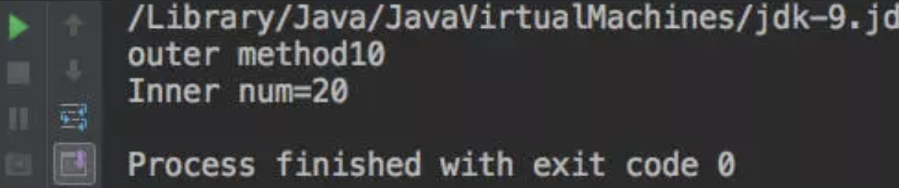

一般情况，我们把类定义成独立的单元。有些情况下，我们把一个类放在另一个类的内部定义，称为内部类(innerclasses)。
Java中内部类主要分为成员内部类(非静态内部类、静态内部类)、匿名内部类、局部内部类
内部类可以使用public、default、protected 、private以及static修饰。而外部顶级类(我们以前接触的类)只能使用public和default修饰
注意
内部类只是一个编译时概念，一旦我们编译成功，就会成为完全不同的两个类。对于一个名为Outer的外部类和其内部定义的名为Inner的内部类。编译完成后会出现Outer.class和Outer$Inner.class两个类的字节码文件。所以内部类是相对独立的一种存在，其成员变量/方法名可以和外部类的相同。
非静态内部类
- 变量和方法不能声明为静态的。也不能声明静态代码块。
- 实例化的时候需要依附在外部类上面。比如：B是A的非静态内部类，实例化B，则：A.B b = new A().new B();
- 内部类可以引用外部类的静态或者非静态属性或者方法。
对于第一条的论证和延伸
如何理解非静态内部类
我们理解非静态内部类时，可以看作是一个外部类的一个非静态成员，那么其实非静态内部类就是隶属于外部类对象的，但是它就其本质还是一个类。只要把握住这个两个核心接下来的内容就很好理解了。所以这也是为什么在TestInner类中测试使用Inner时，我门需要创建外部类对象之后才能使用内部类对象，因为: 内部类是属于外部类对象的，其次内部类的非静态内容访问也需要内部类对象，所以要new 外部类.new 内部类
非静态内部类定义静态成员是否合法
我们在测试在非静态内部类中说明静态内容时，会直接报错，此时这是为什么呢？
第一：java虚拟机要求所有的静态变量在类加载过程中的初始化阶段将符号引用变为直接引用。我们简单可以理解为：此时还没有对象呢！那么这也意味着我在内部类中定义的静态内容，要先于内部类对象存在。因为它是类层面上的
第二：由于内部类时依附于外部类对象的，那么也就意味着内部类中的内容时依附于外部类的对象的。但是内部类中的静态内容是不需要实例就可以，上述第一条已经说过了，但是由于第二条我们刚说的内部类时依附于外部类的，也就意味着内部类无法做到在没有外部类实例的情况下而直接使用，所以和我们刚写的第一条相悖。
所以在非静态内部类中不能定义静态内容【编译期常量除外】
非静态内部类是否可以定义静态常量？
【编译期常量】

结论：我们是可以在非静态内部类中定义静态常量的【这里要注意静态常量一定拥有一个编译期常量的】*
第一：根据上面的测试用例2，我们总结的结论，继续向下推导。为什么在非静态内部类中常量是可以被static修饰的。这里要注意，num这个变量被final static修饰后，由于所赋值为字面常量，而此时字面常量会在编译阶段确定值，我们将这样的常量称之为编译期常量，而编译期常量是不需要加载类的字节码文件的，很多书上将这一步称之为编译期常量折叠【编译器在编译阶段通过语法分析计算出常量表达式的具体值】。
第二：通过上一步的理解，我们也可以这样说，编译期常量不会导致类加载，那么基于这一条，我们就可以理解为什么静态常量在非静态内部类中定义是合
【运行期常量】
思考：为什么用 Math.random(); 就不行了呢？
结论：其实这里的原因就是和测试用例2和测试用例3结合起来的。因为此时这里赋值不在时编译期常量，而是非编译期常量，对于这样的值而言编译期无法折叠编译器只能做一些语法检查，比如该常量之是否在其他地方做了修改等。。。既然无法确定值，那么就会导致该常量值的确定需要类被加载时确定，其实也和我们测试用例2一样，就会报错。
所以非静态内部类中不能拥有静态成员变量/方法，但是可以有静态的编译期常量，不能使用非编译期常量。通过这个我们也可以理解为什么有些类中定义的字符串会通过static final修饰了。无需导致类加载，在一定程度上降低了内存消耗。
静态内部类
- 属性和方法可以声明为静态的或者非静态的。
- 实例化静态内部类：比如：B是A的静态内部类，A.B b = new A.B();
- 内部类只能引用外部类的静态的属性或者方法。(因不一定存在相应外部类的对象)
- 如果属性或者方法声明为静态的，那么可以直接通过类名直接使用。比如B是A的静态内部类，b（）是B中的一个静态属性，则可以：A.B.b();
匿名内部类
适合那种只需要使用一次的类。比如：键盘监听操作等等
注意
- 匿名内部类没有访问修饰符。
- 匿名内部类没有构造方法。因为它连名字都没有那又何来构造方法呢
语法
|
|
局部内部类
还有一种内部类，它是定义在方法内部的，作用域只限于本方法，称为局部内部类。
局部内部类的的使用主要是用来解决比较复杂的问题，想创建一个类来辅助我们的解决方案，到那时又不希望这个类是公共可用的，所以就产生了局部内部类。局部内部类和成员内部类一样被编译，只是它的作用域发生了改变，它只能在该方法中被使用，出了该方法就会失效。
局部内部类在实际开发中应用很少
|
|
关于java静态方法的相关总结：
一个类的静态方法只能访问静态属性（静态方法是属于类的，而普通方法是属于对象的。）
一个类的静态方法不能够直接调用非静态方法；
如访问控制权限允许，static 属性和方法可以使用类名加“.”方式调用；当然也可以使用实例加“.”方式调用；
静态方法中不存在当前对象，因而不能使用“this”，当然也不能使用”super”；
静态方法不能被非静态方法覆盖；
构造方法不允许声明为 static 的；
局部变量不能使用static修饰；
问题：为什么一个类的静态方法只能访问静态属性或静态方法？
回答：静态方法是属于类的，而普通方法是属于对象的。
属于类的静态方法可以在对象不存在的时候就能访问到，而普通方法必须先new一个对象才能用这个对象访问
。当我们访问调用静态方法的时候（使用类名.静态方法名）这个时候就没有对象创建，所以普通方法是访问不到的。
为了避免这种错误，所以java就不允许在静态方法中访问非静态方法。可以想一下main方法。
ref:
https://www.cnblogs.com/aademeng/articles/6192944.html
https://www.jianshu.com/p/4dbe68850e1b
https://www.sxt.cn/Java_jQuery_in_action/five-classification.html